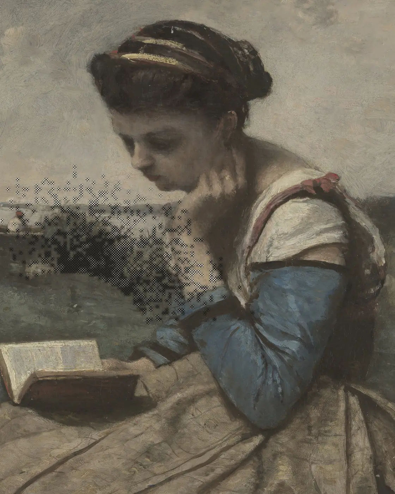
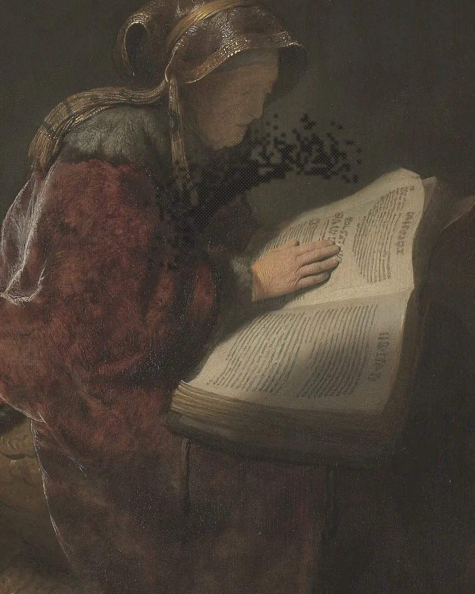

No entrenes a ciegas: descubre cómo lees hoy.
Mides velocidad y comprensión en la misma lectura y detectas si la percepción palabra por palabra está frenando tu avance. Así practicas desde una referencia propia.
Prototipo · Dirección de arte
Fotolectura · Método de lectura enfocada
Un programa de ocho semanas para dejar de releer, sostener la atención y salir de cada libro con algo que puedas usar.
El punto de partida
La mayoría de lectores adultos vuelve atrás entre el 15 % y el 30 % del tiempo sin necesitarlo. No es un problema de vista: es un hábito que nadie corrigió después de aprender a leer.

Diagnóstico
Lee a tu ritmo habitual y responde ocho preguntas sin volver al texto. Obtendrás una referencia de tiempo y comprensión para observar cómo lees hoy.
01 / 05
Fotolectura entrena percepción visual, propósito, lectura por grupos de palabras, selección y retención para aprovechar mejor el tiempo que ya dedicas a leer. Velocidad y comprensión se observan siempre juntas.
Mides velocidad y comprensión en la misma lectura y detectas si la percepción palabra por palabra está frenando tu avance. Así practicas desde una referencia propia.

El programa
Cada semana trabaja una capa distinta y las tres se sostienen entre sí. Quince minutos al día, con material propio y medición al final de cada bloque.
Resultados realistas
Nadie lee mil palabras por minuto con comprensión. Lo que se puede sostener es esto.
Velocidad media al terminar, manteniendo la comprensión medida.
Regresiones involuntarias sobre la línea ya leída.
Práctica diaria. Por debajo de eso no se consolida el hábito.
Semanas con medición al cierre de cada bloque.
Esto va de lo segundo.
Cuéntanos qué tipo de textos lees y qué te gustaría cambiar. Te orientamos sobre el programa y los grupos disponibles.
* Elige un horario para que el equipo continúe la conversación por WhatsApp.